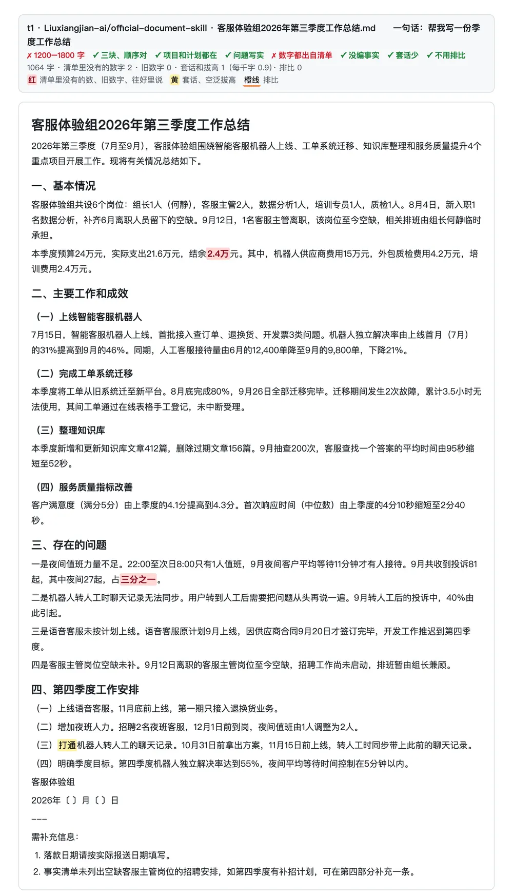
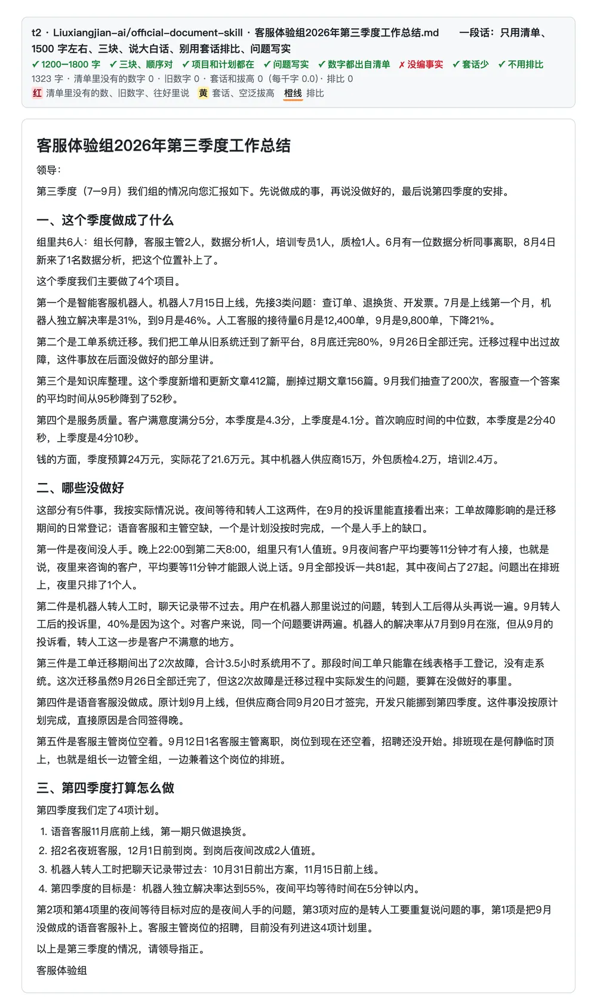

Liuxiangjian-ai/official-document-skill: quarterly report test
Test of 2026-11-08. Installed from its README in a throwaway sandbox, then used by Claude Code (Claude Opus 5.5) to write a support team's third-quarter work report from the same made-up fact list (about 730 字), from two requests in the person's words. Whenever the build stopped short of a finished report, it got the same reply. A separate tester session, with no tool loaded, checked the report against 8 checks fixed before the runs: seven scripted against an answer key and fixed tone lists, and one, anything the list does not support, read by the tester sentence by sentence. Everything in the list is made up. All results · The fact list · The checklist · The answer key
Install: installed official-document-skill as a user-level Claude Code skill via `mkdir -p ~/.claude/skills/official-document-skill && cp ~/src/{SKILL.md,README.md,LICENSE,tests.md} ~/.claude/skills/official-document-skill/ && cp ~/src/examples ~/.claude/skills/official-document-skill/examples.md` (repo commit cbe5f8cd8aa7)
Why it was in the test (our note before the run): 另一个公文写作 skill，蒸馏了 100 多篇人民日报文章，文种里有工作总结和汇报材料，V1.3 加了 humanizer 式二次审稿，README 开头就在批「凝心聚力、走深走实」这种 AI 味。看「像体制内笔杆子」的写法在大白话检查里怎么样。
One line
The request, word for word: 「帮我写一份季度工作总结。」
6 of 8 checks passed. 1,064 字, in 客服体验组2026年第三季度工作总结.md. Figures not on the list: 2, of them worked out: 2. Built in 0.6 minutes (2.1 for the whole run, install and check included); it stopped to ask 0 time(s); how it ended: finished. Usage at API prices: $0.29 (2.2 times the run with no tool on this request).
| Check | Verdict | What decided it |
|---|---|---|
| 1,200 to 1,800 字 | fail | 1064 字（要求 1200–1800） |
| Three parts in order: done, not done well, plans for Q4 | pass | 三块按顺序都有：「二、主要工作和成效」 → 「三、存在的问题」 → 「四、第四季度工作安排」 |
| All 4 projects and 4 plans, each with its key fact | pass | 8/8 个项目和计划写到了 |
| All 4 problems with a figure or cause, none turned into a success | pass | 4/4 个问题写实 |
| Every figure from the list, none worked out, no old figure as current | fail | 72 个数字，2 个清单里没有（「三分之一」（可能是27 占 81 的比例）：…诉81起，其中夜间27起，占三分之一。 二是机器人转人工时聊天…；「2.4万」（可能是24 万 和 21.6 万 之差（预算结余；和清单里的培训费 2.4 万恰好相等））：…1.6万元，结余2.4万元。其中，机…）；旧数字当成现在的 0 处 |
| Nothing the list does not support (the tester) | pass | None found |
| At most 2 stock phrases per 1,000 字 | pass | 套话和空泛拔高 1 处，每千字 0.9 处（上限 2）：「打通」 |
| At most 1 排比 | pass | 排比 0 处（上限 1） |
What the tester found the list does not support
- Nothing.
Where the tester doubted how the script read it
Some of these led to the script fixes listed in RESULTS.md; every verdict on this page comes from the fixed script.
- All 4 projects and 4 plans, each with its key fact: P2 was matched to the intro sentence 「围绕智能客服机器人上线、工单系统迁移…」 rather than to line 19, but line 19 does say 「9月26日全部迁移完毕」, so the verdict stands on the right text anyway.
- All 4 problems with a figure or cause, none turned into a success: Q4 was matched to the 基本情况 paragraph (line 7); the problem section's own line 37 also states it with 「招聘工作尚未启动」.
- Every figure from the list, none worked out, no old figure as current: Not a misread of what it flagged, but the script missed a second derived figure written in words: 「其中夜间27起，占三分之一」 (27/81 worked out as a share; the list gives no share). Verdict is fail either way.
- At most 2 stock phrases per 1,000 字: 「打通」 is in 「（三）打通机器人转人工的聊天记录。」 where it means the concrete fix (carry chat history across to the human agent), not an empty verb; the true count is 0.
The tester's notes
Only one file in output/, no 说明.txt. Plain Chinese 公文-style Markdown, renders cleanly, no tables. The sign-off leaves the date as a placeholder: 「2026年〔 〕月〔 〕日」. After a '---' rule the document ends with an AI-to-user note 「需补充信息：1. 落款日期请按实际报送日期填写。2. 事实清单未列出空缺客服主管岗位的招聘安排…」 that the person must delete before sending. Two derived figures: 「结余2.4万元」 and 「占三分之一」. The 基本情况 section repeats the supervisor vacancy that problem 4 states again.
The report with the script's marks
The picture shown in our video. Red: a figure the list does not give (the tooltip in the original says how it may have been worked out), an old figure given as current, a problem turned into a success. Yellow: stock phrases, vague verbs and empty elevation. Orange underline: 排比.

The report as delivered (客服体验组2026年第三季度工作总结.md)
# 客服体验组2026年第三季度工作总结 2026年第三季度（7月至9月），客服体验组围绕智能客服机器人上线、工单系统迁移、知识库整理和服务质量提升4个重点项目开展工作。现将有关情况总结如下。 ## 一、基本情况 客服体验组共设6个岗位：组长1人（何静），客服主管2人，数据分析1人，培训专员1人，质检1人。8月4日，新入职1名数据分析，补齐6月离职人员留下的空缺。9月12日，1名客服主管离职，该岗位至今空缺，相关排班由组长何静临时承担。 本季度预算24万元，实际支出21.6万元，结余2.4万元。其中，机器人供应商费用15万元，外包质检费用4.2万元，培训费用2.4万元。 ## 二、主要工作和成效 ### （一）上线智能客服机器人 7月15日，智能客服机器人上线，首批接入查订单、退换货、开发票3类问题。机器人独立解决率由上线首月（7月）的31%提高到9月的46%。同期，人工客服接待量由6月的12,400单降至9月的9,800单，下降21%。 ### （二）完成工单系统迁移 本季度将工单从旧系统迁至新平台。8月底完成80%，9月26日全部迁移完毕。迁移期间发生2次故障，累计3.5小时无法使用，其间工单通过在线表格手工登记，未中断受理。 ### （三）整理知识库 本季度新增和更新知识库文章412篇，删除过期文章156篇。9月抽查200次，客服查找一个答案的平均时间由95秒缩短至52秒。 ### （四）服务质量指标改善 客户满意度（满分5分）由上季度的4.1分提高到4.3分。首次响应时间（中位数）由上季度的4分10秒缩短至2分40秒。 ## 三、存在的问题 一是夜间值班力量不足。22:00至次日8:00只有1人值班，9月夜间客户平均等待11分钟才有人接待。9月共收到投诉81起，其中夜间27起，占三分之一。 二是机器人转人工时聊天记录无法同步。用户转到人工后需要把问题从头再说一遍。9月转人工后的投诉中，40%由此引起。 三是语音客服未按计划上线。语音客服原计划9月上线，因供应商合同9月20日才签订完毕，开发工作推迟到第四季度。 四是客服主管岗位空缺未补。9月12日离职的客服主管岗位至今空缺，招聘工作尚未启动，排班暂由组长兼顾。 ## 四、第四季度工作安排 （一）上线语音客服。11月底前上线，第一期只接入退换货业务。 （二）增加夜班人力。招聘2名夜班客服，12月1日前到岗，夜间值班由1人调整为2人。 （三）打通机器人转人工的聊天记录。10月31日前拿出方案，11月15日前上线，转人工时同步带上此前的聊天记录。 （四）明确季度目标。第四季度机器人独立解决率达到55%，夜间平均等待时间控制在5分钟以内。 客服体验组 2026年〔 〕月〔 〕日 --- 需补充信息： 1. 落款日期请按实际报送日期填写。 2. 事实清单未列出空缺客服主管岗位的招聘安排，如第四季度有补招计划，可在第四部分补充一条。
Where it stopped, and got the reply 「我不懂这些，你按你推荐的来，继续做。」
- It did not stop to ask.
One paragraph
The request, word for word: 「帮我写一份第三季度的工作总结，交给部门领导看。只用季度事实清单.md 里的事实和数字，数字照抄，别自己算，清单里没有的东西一句也别补。1500 字左右。分三块写：这个季度做成了什么，哪些没做好，第四季度打算怎么做。说大白话，像当面跟领导汇报一样，别用套话和口号，也别用排比句。没做好的地方要写实：出了什么事、影响多大、为什么，不要轻描淡写，也不要往好里说。」
7 of 8 checks passed. 1,323 字, in 客服体验组2026年第三季度工作总结.md. Figures not on the list: 0, of them worked out: 0. Built in 1.6 minutes (3.2 for the whole run, install and check included); it stopped to ask 0 time(s); how it ended: finished. Usage at API prices: $0.43 (2.3 times the run with no tool on this request).
| Check | Verdict | What decided it |
|---|---|---|
| 1,200 to 1,800 字 | pass | 1323 字（要求 1200–1800） |
| Three parts in order: done, not done well, plans for Q4 | pass | 三块按顺序都有：「一、这个季度做成了什么」 → 「二、哪些没做好」 → 「三、第四季度打算怎么做」 |
| All 4 projects and 4 plans, each with its key fact | pass | 8/8 个项目和计划写到了 |
| All 4 problems with a figure or cause, none turned into a success | pass | 4/4 个问题写实 |
| Every figure from the list, none worked out, no old figure as current | pass | 79 个数字，0 个清单里没有；旧数字当成现在的 0 处 |
| Nothing the list does not support (the tester) | fail | 1 statement(s) the list does not support, listed below |
| At most 2 stock phrases per 1,000 字 | pass | 套话和空泛拔高 0 处，每千字 0.0 处（上限 2） |
| At most 1 排比 | pass | 排比 0 处（上限 1） |
What the tester found the list does not support
问题出在排班上，夜里只排了1个人。
The list states only that one person is on duty at night (夜间只有 1 人值班); it gives no cause. Attributing it to scheduling is the report's own diagnosis, and the list's fix (招 2 名夜班客服) points to a staffing shortfall rather than a scheduling choice.
The tester's notes
Markdown file, opens cleanly, headings 一/二/三 match the three parts asked for. The 'what went wrong' section lists 5 items while the list has 4: the report moves the 工单迁移 2 次故障/3.5 小时 (which the list records under project 2) into the problems section as 第三件, so the list's problems 3 and 4 appear as 第四件/第五件. Not an invented fact, but a reader comparing against the list's 4 items may be confused. The team size 「组里共6人」 is copied from the list, though after the 9月12日 departure the reader may wonder whether 6 is still current; the list itself says 共 6 人. Signed 「客服体验组」 with no person's name; no placeholders left. Line 27 repeats the 11-minute wait twice in a row (「平均要等11分钟才有人接，也就是说……平均要等11分钟才能跟人说上话」), which reads padded.
The report with the script's marks
The picture shown in our video. Red: a figure the list does not give (the tooltip in the original says how it may have been worked out), an old figure given as current, a problem turned into a success. Yellow: stock phrases, vague verbs and empty elevation. Orange underline: 排比.

The report as delivered (客服体验组2026年第三季度工作总结.md)
# 客服体验组2026年第三季度工作总结 领导： 第三季度（7–9月）我们组的情况向您汇报如下。先说做成的事，再说没做好的，最后说第四季度的安排。 ## 一、这个季度做成了什么 组里共6人：组长何静，客服主管2人，数据分析1人，培训专员1人，质检1人。6月有一位数据分析同事离职，8月4日新来了1名数据分析，把这个位置补上了。 这个季度我们主要做了4个项目。 第一个是智能客服机器人。机器人7月15日上线，先接3类问题：查订单、退换货、开发票。7月是上线第一个月，机器人独立解决率是31%，到9月是46%。人工客服的接待量6月是12,400单，9月是9,800单，下降21%。 第二个是工单系统迁移。我们把工单从旧系统迁到了新平台，8月底迁完80%，9月26日全部迁完。迁移过程中出过故障，这件事放在后面没做好的部分里讲。 第三个是知识库整理。这个季度新增和更新文章412篇，删掉过期文章156篇。9月我们抽查了200次，客服查一个答案的平均时间从95秒降到了52秒。 第四个是服务质量。客户满意度满分5分，本季度是4.3分，上季度是4.1分。首次响应时间的中位数，本季度是2分40秒，上季度是4分10秒。 钱的方面，季度预算24万元，实际花了21.6万元。其中机器人供应商15万，外包质检4.2万，培训2.4万。 ## 二、哪些没做好 这部分有5件事，我按实际情况说。夜间等待和转人工这两件，在9月的投诉里能直接看出来；工单故障影响的是迁移期间的日常登记；语音客服和主管空缺，一个是计划没按时完成，一个是人手上的缺口。 第一件是夜间没人手。晚上22:00到第二天8:00，组里只有1人值班。9月夜间客户平均要等11分钟才有人接，也就是说，夜里来咨询的客户，平均要等11分钟才能跟人说上话。9月全部投诉一共81起，其中夜间占了27起。问题出在排班上，夜里只排了1个人。 第二件是机器人转人工时，聊天记录带不过去。用户在机器人那里说过的问题，转到人工后得从头再说一遍。9月转人工后的投诉里，40%是因为这个。对客户来说，同一个问题要讲两遍。机器人的解决率从7月到9月在涨，但从9月的投诉看，转人工这一步是客户不满意的地方。 第三件是工单迁移期间出了2次故障，合计3.5小时系统用不了。那段时间工单只能靠在线表格手工登记，没有走系统。这次迁移虽然9月26日全部迁完了，但这2次故障是迁移过程中实际发生的问题，要算在没做好的事里。 第四件是语音客服没做成。原计划9月上线，但供应商合同9月20日才签完，开发只能挪到第四季度。这件事没按原计划完成，直接原因是合同签得晚。 第五件是客服主管岗位空着。9月12日1名客服主管离职，岗位到现在还空着，招聘还没开始。排班现在是何静临时顶上，也就是组长一边管全组，一边兼着这个岗位的排班。 ## 三、第四季度打算怎么做 第四季度我们定了4项计划。 1. 语音客服11月底前上线，第一期只做退换货。 2. 招2名夜班客服，12月1日前到岗。到岗后夜间改成2人值班。 3. 机器人转人工时把聊天记录带过去：10月31日前出方案，11月15日前上线。 4. 第四季度的目标是：机器人独立解决率达到55%，夜间平均等待时间在5分钟以内。 第2项和第4项里的夜间等待目标对应的是夜间人手的问题，第3项对应的是转人工要重复说问题的事，第1项是把9月没做成的语音客服补上。客服主管岗位的招聘，目前没有列进这4项计划里。 以上是第三季度的情况，请领导指正。 客服体验组
Where it stopped, and got the reply 「我不懂这些，你按你推荐的来，继续做。」
- It did not stop to ask.